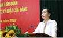
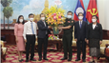
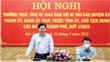
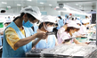
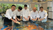
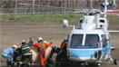

(BGO)——4月13日，党中央委员、省委书记、省议会代表团团长杨文泰同志； 省委副书记、省人民委员会主席黎英阳接待了以拉南大使率领的新加坡大使馆 代表团来北江参观工作。 相关部门和分支机构的领导代表也出席了会议。


(BGO) - 2月24日上午，北江省委常委在省委办公厅召开会议，对越 南医生建党67周年向卫生工作者表示祝贺和鼓励。第 27/2 天。 1955-2022）。
燕东区需集中资源，早日打造交通突破口

燕东区需集中资源，早日打造交通突破口
燕东区需集中资源，早日打造交通突破口
燕东区需集中资源，早日打造交通突破口
燕东区需集中资源，早日打造交通突破口
燕东区需集中资源，早日打造交通突破口

(BGO) - 由于决心在雨季和暴风雨季节确保工程安全，这些天来， 投资者和承包商正在关注建设灌溉工程以及修复修复堤坝问题的手段、 材料和人力资源。。。
调整非公开发行公司债券的发行和投资
民办幼儿园、小学可按3.3%/年的利率借款
北江 在 PCI 排名中排名第 31
签署陆银荔枝出口欧洲协议
在北江市开设国际级五星级绿蟹海鲜餐厅
猪和家禽价格上涨，北江农民赚取高额利润
(BGO) - 北江市党委充分认识到地方记者和宣传人员在部署和传播 党的方针和方针、国家政策和法律方面的重要作用，始终有兴趣领 导、指导、选拔和建设这个团队满足新形势下的任务要求。
掌握体检和治疗中的高难度技术
北江：12名学生在网上国际象棋锦标赛中获得一等奖
工人的生殖保健：很少关注，很多后果
民办学前机构：关注教师生活，吸引学生
(BGO) - 北江省人民委员会主席刚刚发文要求各部门：文化、体育 和旅游； 规划与投资； 金融; 构造; 北江报； 省广播电视台； 各区市人民委员会将加强对全省历史文物、风景名胜区保护、修复、 修复工作的管理。
在家庭中建立阅读文化：培养知识，连接爱
在家庭中建立阅读文化：培养知识，连接爱
北江广播和电视台将报道SEA Games 31的现场羽毛球比赛
第39届北江报传统荒野奖：浪江区获全队一等奖

4月27日，韩国最大的港口城市 釜山宣布了一项合作计划，将 在釜山港附近建设世界上第一个原型漂浮城市。
北江 在 PCI 排名中排名第 31
签署陆银荔枝出口欧洲协议

在北江市开设国际级五星级绿蟹海鲜餐厅

4月27日，韩国最大的港口城市 釜山宣布了一项合作计划，将 在釜山港附近建设世界上第一个原型漂浮城市。
北江 在 PCI 排名中排名第 31
签署陆银荔枝出口欧洲协议
在北江市开设国际级五星级绿蟹海鲜餐厅